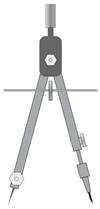
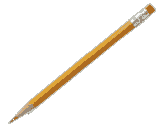
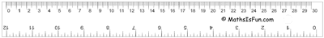

Constructions
Geometric Constructions ... Animated!

"Construction" in Geometry means to draw shapes, angles or lines accurately.
These constructions use only compass, straightedge (i.e. ruler) and a pencil.

This is the "pure" form of geometric construction: no numbers involved!

Basics
Learn these two first, they are used a lot:
Points and Lines

Angles
And it is useful to know how to do 30°, 45° and 60° angles. We can use the angle bisector method (above) to create other angles such as 15°, etc.

Triangle Basics
Triangle Centers
Circle Basics

Circles and Tangents
Polygons
And for the "Master Class":
(Note: You can also see how to Use the Protractor, Use the Drafting Triangle and Ruler, and How to construct a Triangle With 3 Known Sides, but they are not "pure" geometric constructions.)